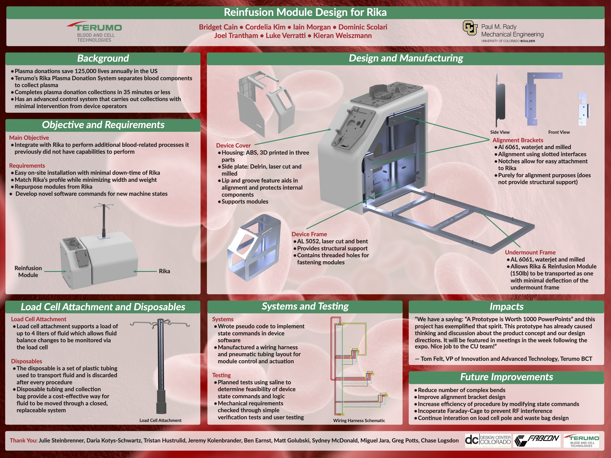

Reinfusion Module for Rika in Partnership With Terumo Blood and Cell Technologies
About the Project
This project was completed as part of the Senior Design course of my BSME. The overall goal of the project was to create a new module for Terumo Blood and Cell Technologies' Rika platform that would help complete additional blood-related processes that Rika could not currently complete itself. My role on the project was the Systems Engineer. As the Systems Engineer, it was my job to manage the systems, requirements, and testing of our project. One of the most interesting challenges of this project confronted our team almost immediately upon starting: Terumo's Rika medical device had not been publicly released and was still a somewhat guarded secret within the company when we began work on the project. This meant that we had limited information on how their device was built and how the systems operated. However, I was still able to facilitate a productive user needs and product requirements generation meeting at Terumo's headquarters with engineers in their Advanced Research group. We started with the user needs for the Reinfusion Module and then used those to write some critical product requirements for function and safety. Given the scope of the course, we could not create a complete set of user needs or product requirements, so instead, I focused on meeting the most critical. The early aspects of the project involved creating some inexpensive prototypes for the Reinfusion Module using cardboard, which allowed the team to lay out necessary components for pumps, sensors, structure of the device, and the disposable. Over the course of the year, the team turned this prototype into a late-stage functional prototype by the end of the project. It involved manufacturing all of our components, many hours of integration testing, and several late nights in the Ideation Garage at Terumo. By the end of the year, the Reinfusion Module was capable of demonstrating automated saline priming and an early version of the desired additional functionality. I verified that our design met the selected critical product requirements through a combination of demonstrations, simulated-use testing, and simple inspection. I had wanted to do some more involved testing to verify reach (for our scope) product requirements, but we did not have time. However, this was a fantastic experience and ultimately helped me land an Engineer in Development position for the same group at Terumo Blood and Cell Technologies that our team had worked with for the year and was able to work on finishing some of the system integration work for the project while on the Advanced Research team.